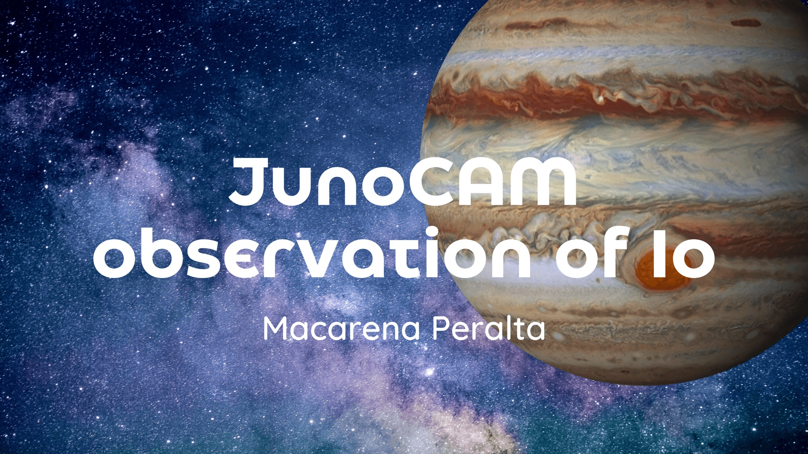
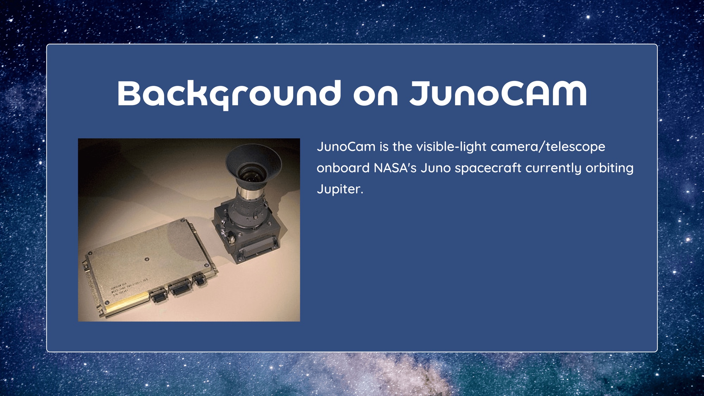
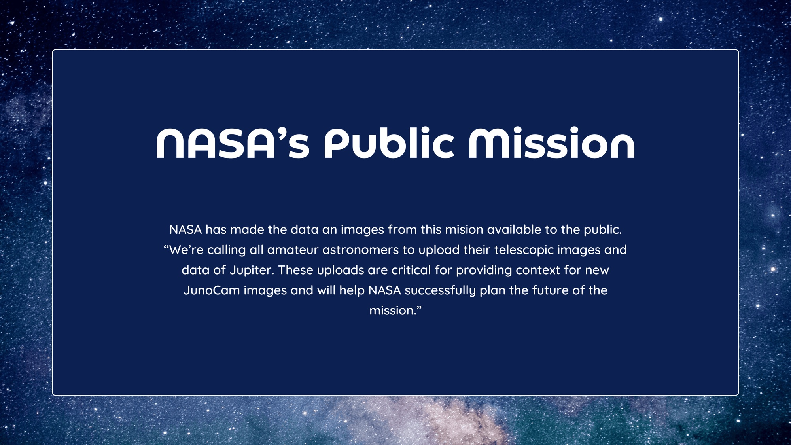
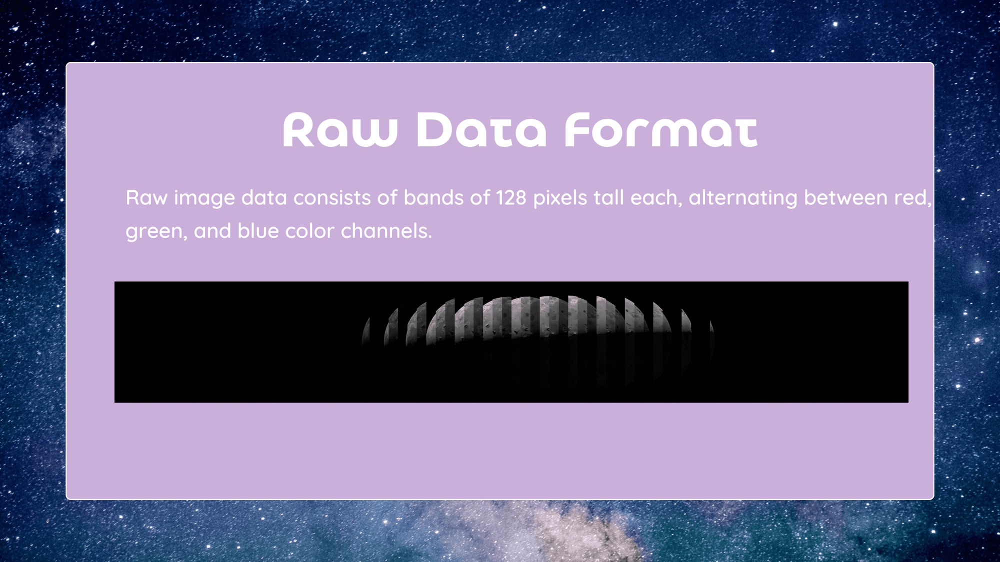
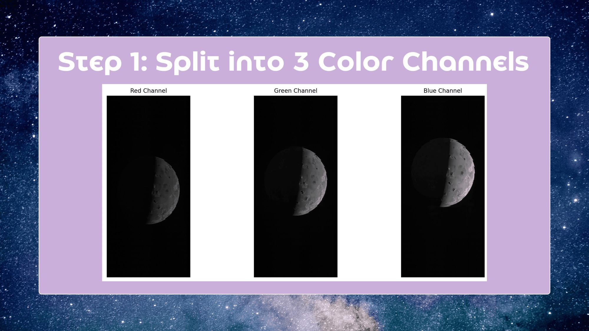
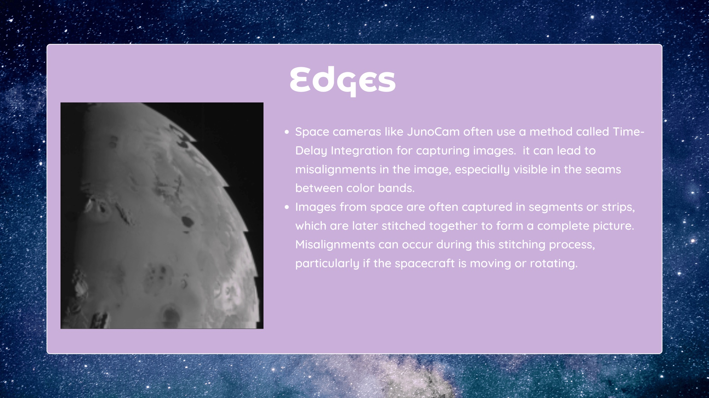
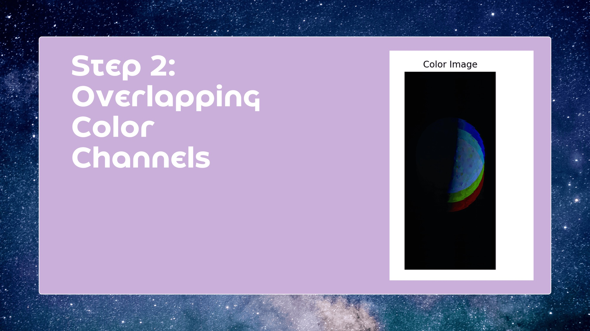
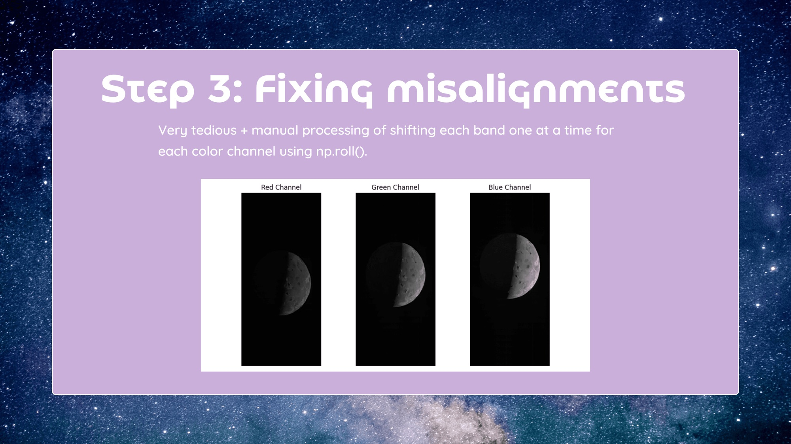
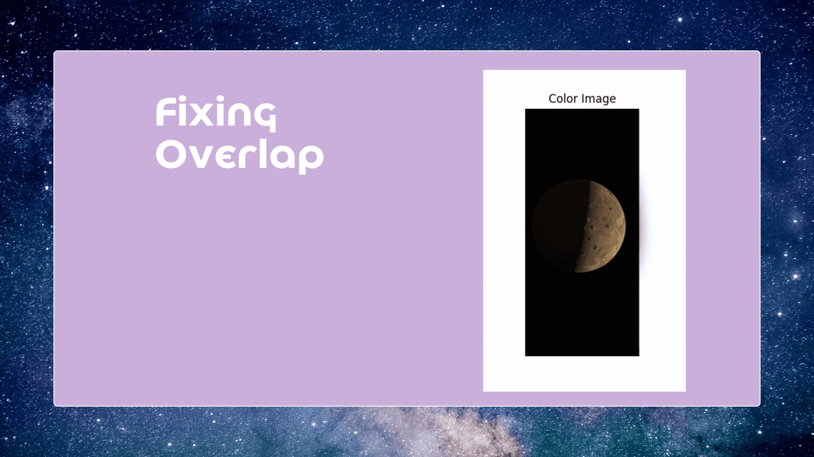
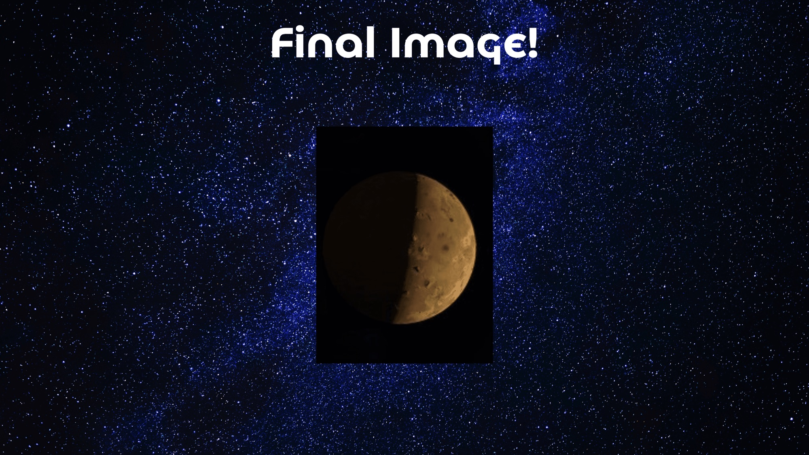

JunoCam
This project processes raw image data from JunoCam, a visible-light telescope camera onboard NASA's Juno spacecraft orbiting Jupiter. Using Python, it reconstructs and corrects color images of Jupiter's moon Io from the spacecraft's banded raw data.









